Data Recovery¶
Introduction¶
File systems such as FAT, NTFS, and ext2/ext3/ext4 store user data in fixed-size blocks or clusters. The cluster size is chosen at format time and normally stays constant for the life of the volume. Operating systems try to place files contiguously to limit fragmentation. When a file is deleted, the name and directory entry are removed first; the cluster chain is marked free, but the underlying data often remains until new writes overwrite it. Recovery therefore depends on acting before that reuse and on choosing a method that matches how much metadata still exists.
PhotoRec recovers files by carving recognizable content from raw media. It does not rely on intact directory structures, which makes it effective on damaged or reformatted volumes—at the cost of losing original paths and filenames.
TestDisk focuses on partition tables and boot sectors: it can rebuild damaged MBR/GPT entries and restore bootability after partition-table loss or certain boot-sector corruption.
Autopsy provides a graphical case workflow on top of The Sleuth Kit, suited to structured examination, timelines, and reporting on larger images.
Bulk Extractor scans disk images for e-mail addresses, URLs, credit-card patterns, and other features without mounting the filesystem—useful as a fast triage pass alongside carving and GUI analysis.
Objectives¶
Practice recovering data from an NTFS-based scenario using several forensic tools: partition inspection, file carving with PhotoRec, case-based analysis with Autopsy, feature scanning with Bulk Extractor, and MBR repair with TestDisk and Windows recovery media.
Software¶
FTK Imager 4.3 or higher
Active Disk Editor 7.0
PhotoRec
TestDisk
Bulk Extractor
Autopsy
Task 1 — Obtain the disk image¶
Download the forensic image recuperacion.dd supplied for the practice and verify its integrity (hash, if provided) before analysis.
Task 2 — Analyze the disk layout¶
Examine recuperacion.dd with FTK Imager or Active Disk Editor and record partitioning scheme, partition count, sizes, and filesystem type.
a. Partitioning scheme (MBR vs GPT)¶
The disk uses GPT (GUID Partition Table). The protective MBR and primary GPT header are visible in the sector view; partition entries reference modern GUID types rather than classic MBR CHS entries alone.
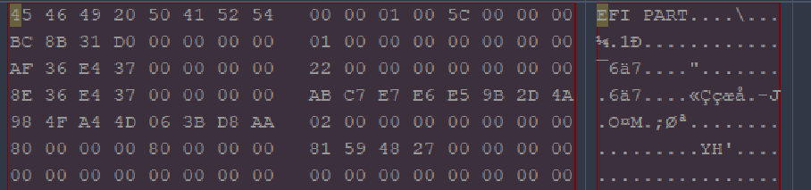
b. Number of valid partitions and size¶
The image contains one valid partition in the partition table view—no additional active primary or extended partitions are listed for user data.
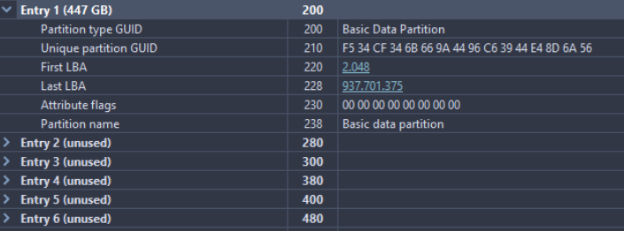
That partition spans approximately 447 GB on the logical volume shown in the property pane (exact byte count depends on sector size and reported capacity in the tool).
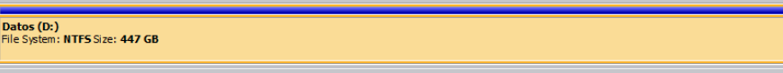
c. Filesystem presence¶
The partition is formatted with NTFS. The volume boot record and filesystem metadata (e.g. “NTFS” OEM ID / BPB fields, depending on the tool) confirm that carved or logical recovery should assume NTFS cluster boundaries and resident data runs where metadata still exists.
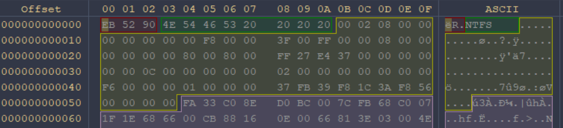
Task 3 — Recover data from recuperacion.dd¶
PhotoRec (file carving)¶
PhotoRec was pointed at the disk image. In the opening screen, the physical device or image file representing recuperacion.dd is selected as the source medium.
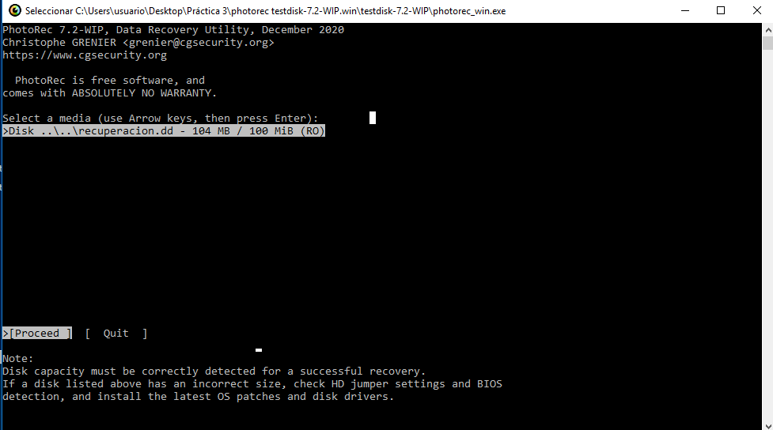
The Search option starts the carving pass (whole-disk / unallocated-oriented workflow as offered in this version).
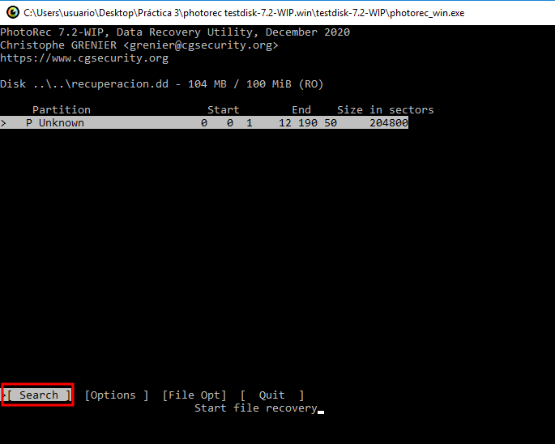
Filesystem type Other (or “Whole disk”) was chosen so PhotoRec does not depend on an intact NTFS catalog; recovered file types appear in the results tree as signatures are matched.
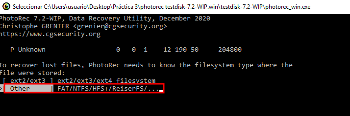
Press C to choose the output directory where recovered files will be written.
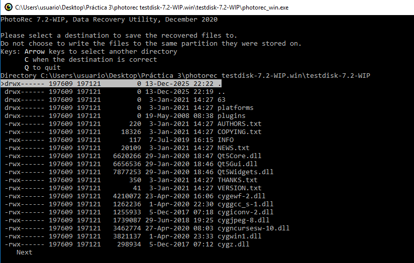
Confirm the destination folder on the analysis workstation.
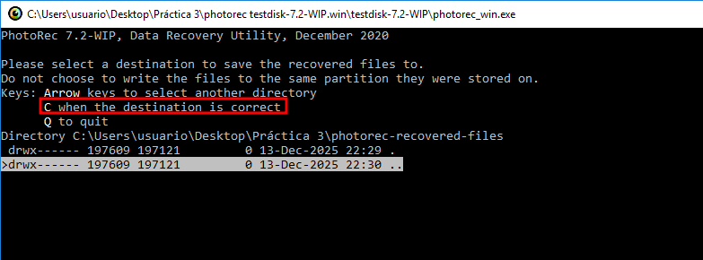
PhotoRec reports completion and the number of files recovered.
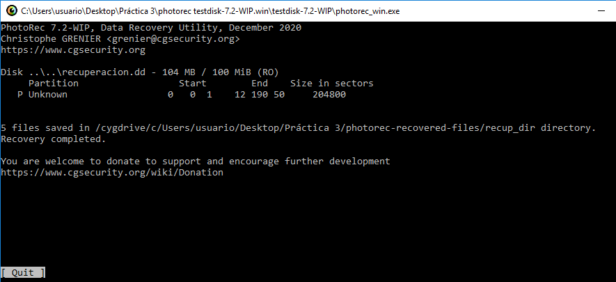
The output folder contains carved files grouped by extension; filenames are often generic (f1234567.jpg) because directory metadata was not available.

Autopsy (case-based examination)¶
A new Autopsy case was created with a descriptive name and base directory for case metadata and exports.
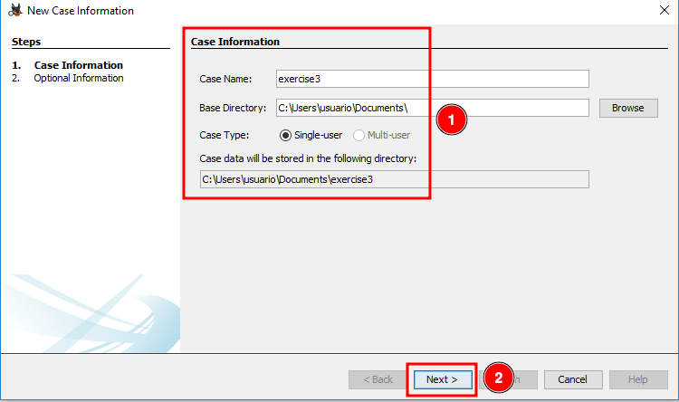
Case information and optional organizational fields were completed.
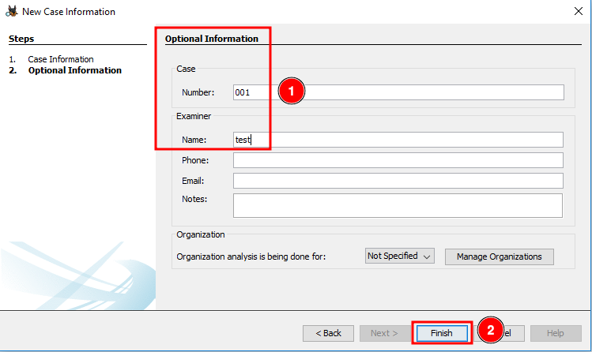
The data source step adds recuperacion.dd (or its mounted path) as an image file evidence source.
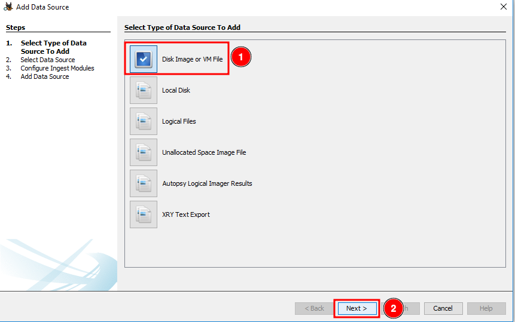
The disk image was selected and the ingest modules were accepted with Next through the wizard defaults appropriate for NTFS.
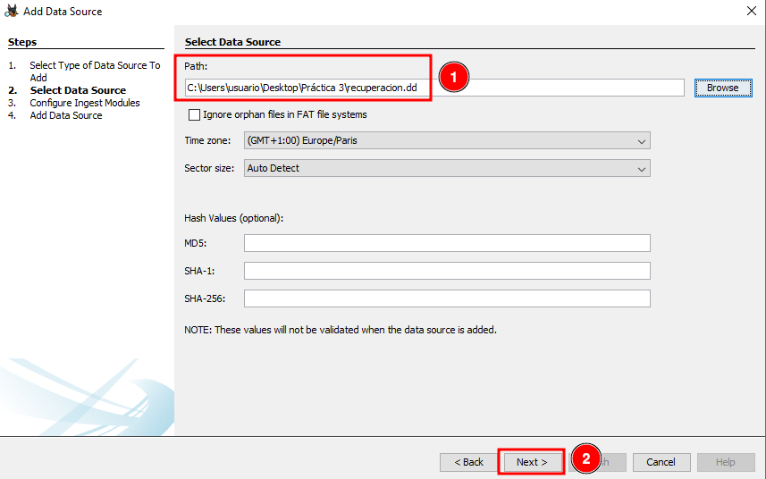
Ingest progress and module configuration during analysis.
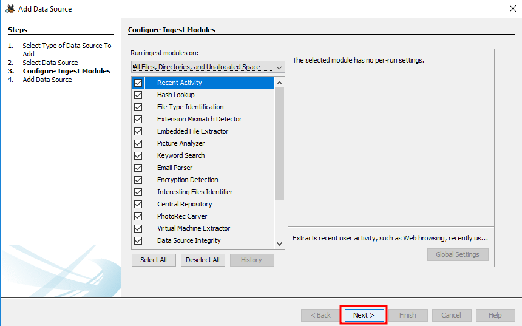
Results view after processing: directory tree, extracted views, and metadata panels.
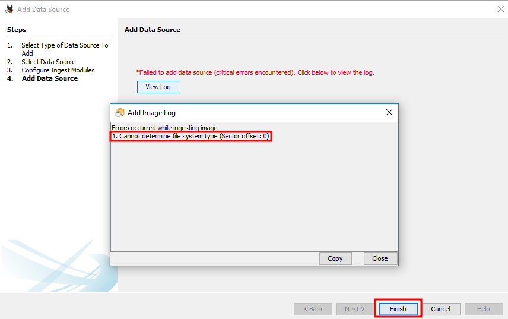
Autopsy exposes more structured context (paths where metadata exists, timestamps, hash sets, keyword hits) than PhotoRec alone. On a small image the interface can look busy relative to the file count; on larger corpora the same layout scales better for filtering and reporting. In this lab, Autopsy surfaced additional artifacts and organization compared with the flat carved output.
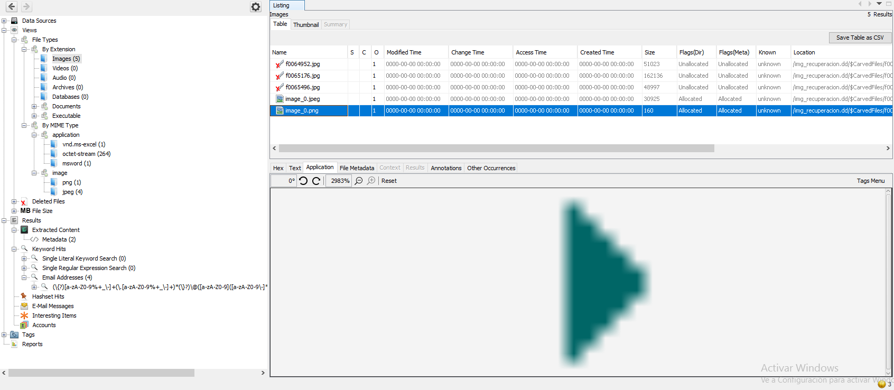
Bulk Extractor (feature scan)¶
Bulk Extractor was launched, the image file selected, and a scan started. The tool writes feature files (e-mail, URL, credit card, etc.) under a report directory without fully parsing NTFS paths.
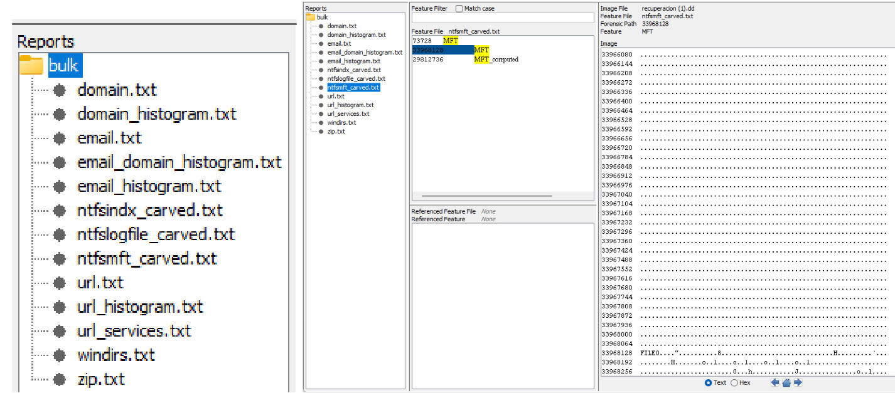
Recovered paths and features can be cross-checked with PhotoRec and Autopsy results.
Task 4 — Repair MBR on the XP–Ubuntu VM (TestDisk)¶
A multi-boot virtual machine (Windows XP and Ubuntu) was imported from the provided OVA. The master boot record was damaged; the VM failed to boot.
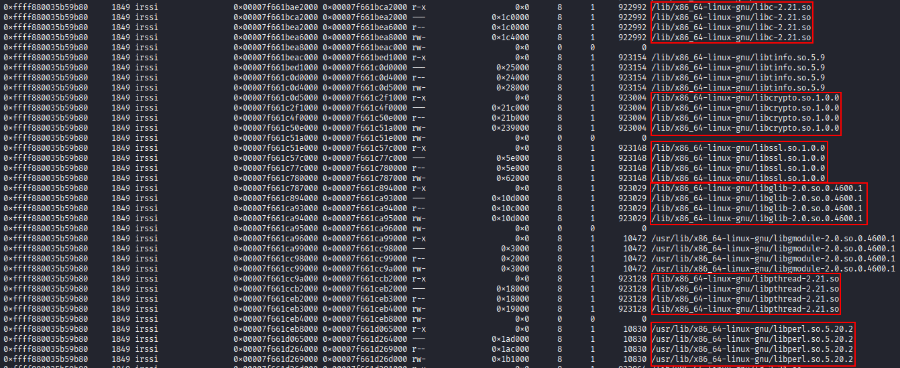
A Windows XP installation ISO was attached and the VM booted from optical media.
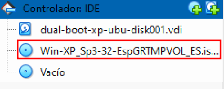
At the setup screen, R (Recovery Console / repair path as shown in the lab) was selected to reach a repair environment.

From the recovery command line, FIXMBR was executed to rewrite the master boot code.
FIXMBR
The utility reported success.
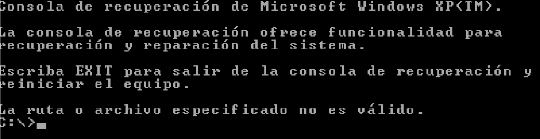
After reboot, the system still failed to start correctly from the hard disk alone.
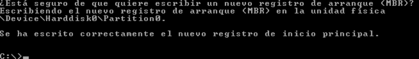
Further inspection showed boot code present but the partition table still inconsistent with the actual layout—FIXMBR repairs the first-stage loader in sector 0 but does not rebuild partition entries.
The partition view remained broken relative to the expected XP/Ubuntu layout.
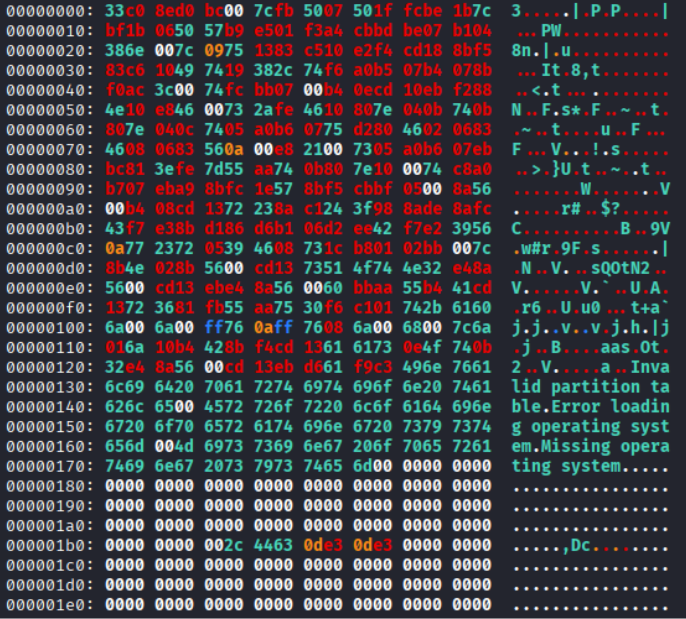
TestDisk on Kali Linux¶
Analysis continued on a Kali host with TestDisk.
testdisk
Create a new log file so actions are documented for the report.
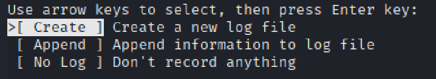
Select the physical disk or image representing the VM virtual disk.
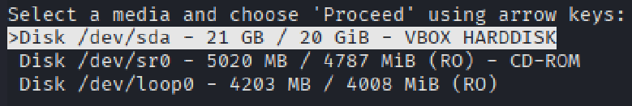
Choose Intel partition table type (standard PC MBR) for this VM.
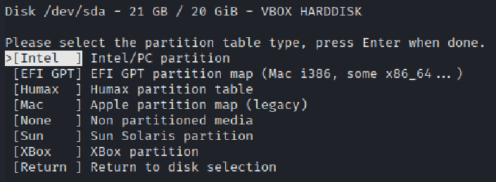
Run Analyse to inspect current and recoverable structures.
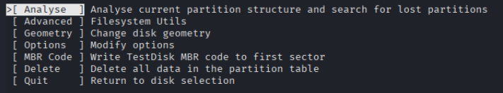
The analysis reflects a destroyed partition table: entries are missing or marked non-existent because the MBR sector was overwritten in the earlier exercise.
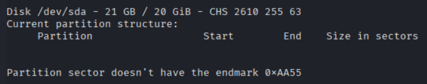
Run Quick Search to locate former partition boundaries.
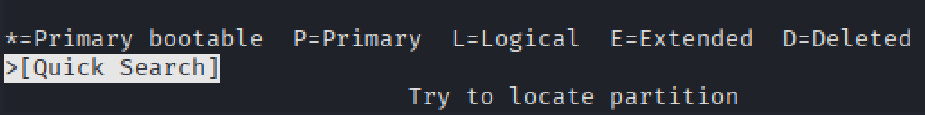
TestDisk found the expected partitions (Windows XP and Linux areas matching the original layout).
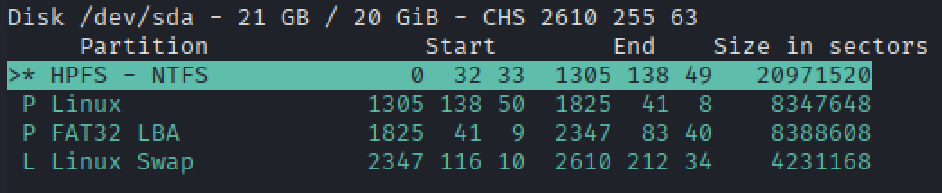
After verifying start/end sectors and types, Write commits the rebuilt partition table to disk.
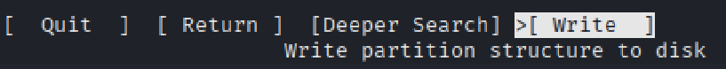
The VM boots again with the restored table.
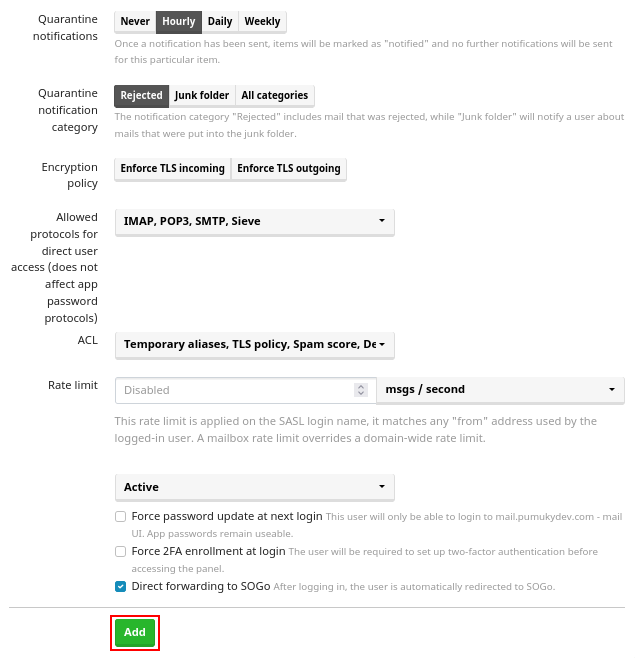
Task 5 — Corrupt and recover MBR on the Windows 7–Debian VM¶
A second multi-boot VM (Windows 7 and Debian) was imported. The exercise intentionally destroys the MBR partition table, then attempts repair with Windows 7 installation media.
Deliberate MBR corruption (Kali live)¶
The VM was started from a Kali live environment (not forensic boot mode, because the exercise requires writing to the disk). A second virtual disk using MBR was attached.

Identify the correct block device (in this lab, /dev/sda).
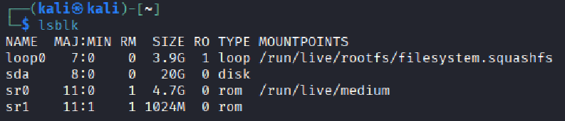
Overwrite the first sector(s) containing the MBR and partition table with dd (zeros or a prepared pattern), destroying partition entries while leaving much of the volume data intact.
# Example pattern used in the lab — adjust device and count to match your environment
sudo dd if=/dev/zero of=/dev/sda bs=512 count=1
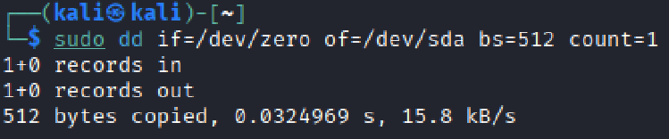
The partition table is no longer valid; the system will not boot until the MBR is repaired.
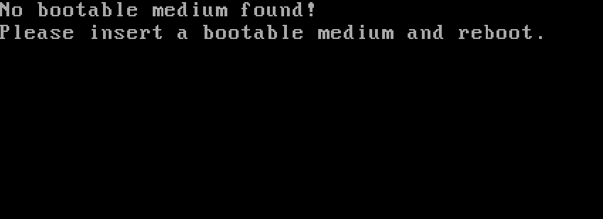
Repair with Windows 7 installation media¶
Boot from a Windows 7 ISO and open Repair your computer.
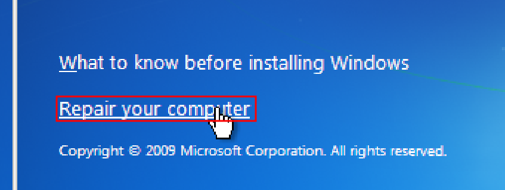
Open Command Prompt from the recovery options.
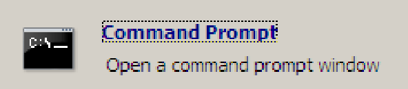
Restore the master boot record with:
bootrec /fixmbr

After reboot, Windows 7 starts normally. The Debian side may still require GRUB repair (boot-repair, live ISO, or grub-install from a Linux environment) because bootrec /fixmbr only restores the Windows boot path in the MBR, not the full multi-boot menu.
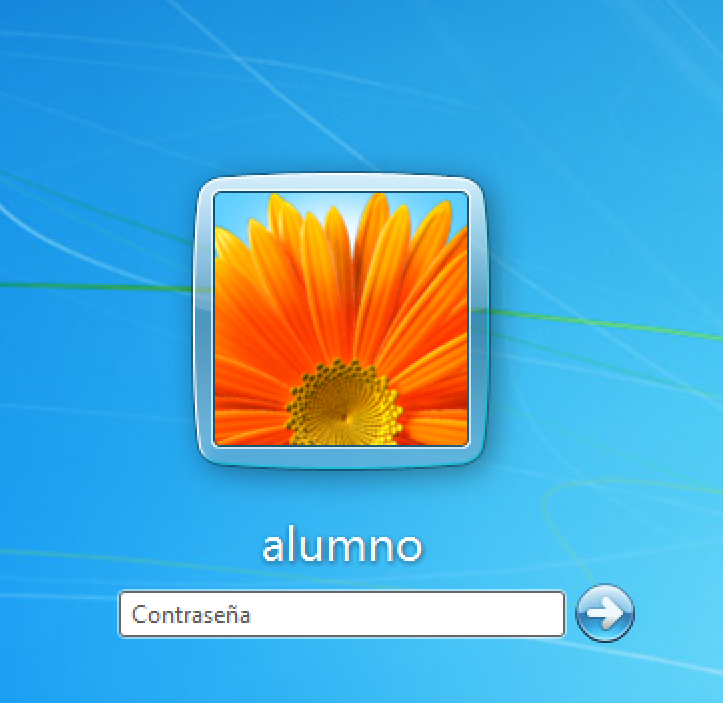